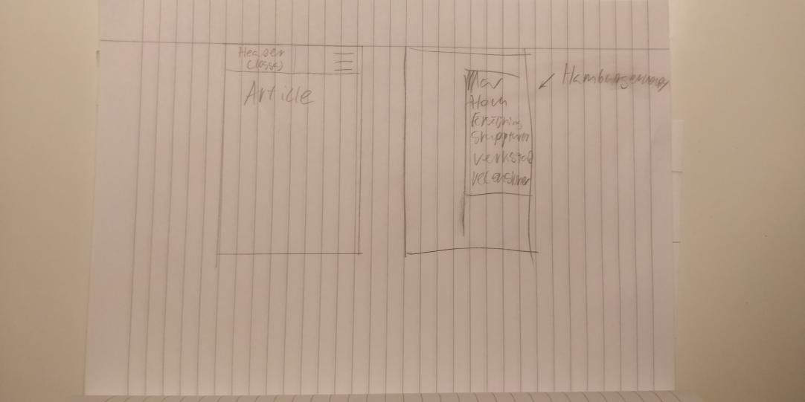
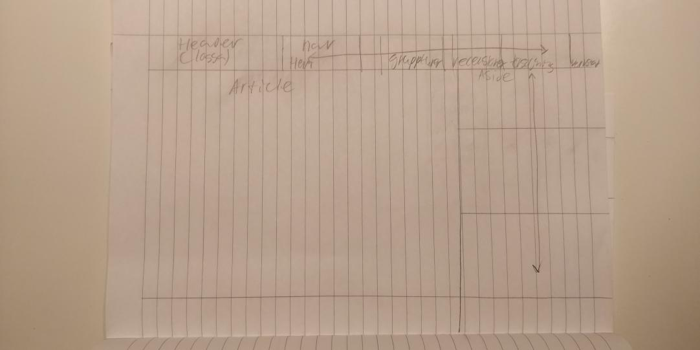

<!-- Se den kommenterade texten i detta html-dokument för att se exempel och förklaringar på hur dokumentationen ska vara uppbyggd. -->

<!-- Länka till detta planeringsdokument i footern till din hemsida. -->

<!DOCTYPE html>
<html lang="sv">

</html>

<head>
    <meta charset="UTF-8">
    <meta name="viewport" content="width=device-width, initial-scale=1.0">
    <meta http-equiv="X-UA-Compatible" content="ie=edge">
    <title>Dokumentation projekt Vt</title>

    <style>
        table,
        td,
        th {
            border: 1px solid black
        }
    </style>

</head>

<body>

    <h1>Dokumentation projekt Vt</h1>

    <h2>1. Idébeskrivning</h2>
    <!-- Vad ska du göra? Vilken är din målgrupp? Om du utvecklar en tidigare sida; Vad ska du förändra/utveckla? -->
    <p>Jag vill göra en hemsida för cyklingnyheter, försäljning osv, lite som en blogg men inte för andra användare.
        Målgruppen är alla som cyklar / är intresserade av cykling /  ska köpa något cykelrelaterat. </p></p>

    <h2>2. Planering</h2>

    <h3>2.1 Handskiss</h3>
    <!-- Här lägger du en bild på din handskiss av layouten. Viktigt att du beskriver vilka boxelement som ska användas. Visa även hur du tänker med ditt grid (Hur många kolumner?) -->
    
    

    <h3>2.2 Schema</h3>
    <!-- Vad ska du göra när? Inte för detaljerat. -->

    <table>
        <tr>
            <th>Vecka</th>
            <th>På lektionen</th>
            <th>Utanför lektionen</th>
        </tr>

       


    <p>Idag började jag komplitera mitt projekt, jag började med att ändra bildstorlek för en av bilderna som jag inte hade tänkt på var massiv så att den blev under 200kb vilket jag gjorde i photoshop, det var inte så lätt då den var enorm. Till nästa vecka ska jag utveckla mina två nya sidor enligt kompliteringsuppgiften jag fick av Emil.

    06/05 idag arbetade jag med att komplitera med skiss för två nya sidor samt pratade jag med Emil vilket gick bra då jag vet att till nästa lektion skall jag designa om mina sidor så de blir olika varandra.

    13/05 idag gjorde jag om skisserna för alla sidorna  vilket tog tid och var svårt du de behövde vara detaljerade. Jag fotograferade för att ha bilder till min sida vilket var lite jobbigt eftersom jag inte vill använda mig av andras bilder men det gick bra. Tog också bort divarna som var tomma men stlingen på sidan fortsatte att vara samma så jag måste fixa det vilket var lite jobbigt.


    </p>


Ville göra min blogg öppen för användare men insåg att det var svårt att implimentera så jag valde att lägga ner det.
</body>

</html>